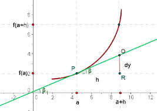
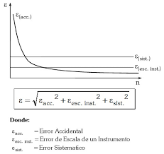
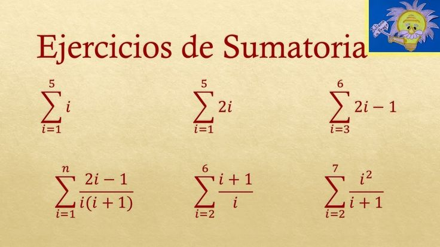
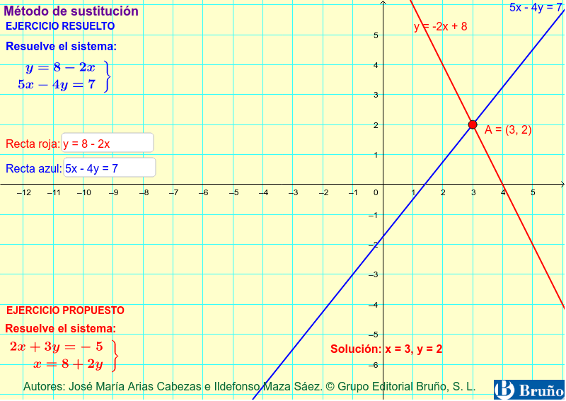
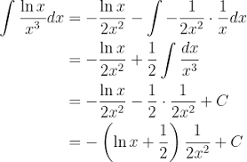

Bienvenido a esta página web de Cálculo, creada para ayudarte a comprender de forma clara, práctica y visual los principales temas del curso. Aquí encontrarás explicaciones sencillas, ejemplos resueltos paso a paso, ejercicios interactivos y recursos gráficos que facilitan el aprendizaje. Esta plataforma está diseñada para que refuerces tus conocimientos, practiques a tu ritmo y te prepares con confianza para tus evaluaciones.
1. La diferencial de una función

La diferencial de una función aproxima cambios pequeños en la variable independiente y su efecto en la dependiente.La diferencial de una función es una herramienta matemática que permite aproximar cómo cambia una función cuando su variable independiente sufre una pequeña variación. En otras palabras, nos ayuda a estimar cambios en la función usando la pendiente de la recta tangente, lo cual es muy útil en problemas de aproximación, análisis de errores y aplicaciones prácticas en ciencias e ingeniería.
Ejemplo 1
Si f(x) = x², hallar la diferencial cuando x = 3 y dx = 0.1.
f'(x) = 2x → f'(3) = 6
df = f'(x)·dx = 6·0.1 = 0.6
Resultado: df = 0.6
Ejemplo 2
Si y = √x, hallar dy cuando x = 9 y dx = 0.2.
y = x^{1/2} → dy/dx = 1/(2√x)
dy = (1/(2√9))·0.2 = (1/6)·0.2 ≈ 0.0333
Resultado: dy ≈ 0.0333
Ejemplo 3
Si z = x²y + 3y², hallar dz cuando x = 1, y = 2, dx = 0.1 y dy = 0.05.
∂z/∂x = 2xy, ∂z/∂y = x² + 6y
dz = (2xy)dx + (x² + 6y)dy
dz = (2·1·2)(0.1) + (1 + 12)(0.05)
dz = 0.4 + 0.65 = 1.05
Resultado: dz = 1.05
Quiz rápido
Si f(x) = 3x², ¿cuál es df cuando x = 2 y dx = 0.1?
f'(x) = 6x → f'(2) = 12 → df = 12·0.1 = 1.2
2. Modelos basados en la diferencial y análisis de errores

Este tema estudia cómo usar las diferenciales para aproximar errores en mediciones y cálculos, permitiendo evaluar la precisión de resultados en problemas reales de física, ingeniería y otras ciencias.
Ejemplo 1
El radio de una esfera es 10 cm con un error de ±0.1 cm. Aproximar el error en el volumen.
V = (4/3)πr³ → dV = 4πr² dr
dV = 4π(10²)(0.1) = 40π ≈ 125.66 cm³
Error aproximado: ±125.66 cm³
Ejemplo 2
Un cuadrado tiene lado 5 m con error ±0.02 m. Aproximar el error en el área.
A = x² → dA = 2x dx
dA = 2(5)(0.02) = 0.2 m²
Ejemplo 3
Si P = xy², x = 4 ± 0.1, y = 2 ± 0.05, aproximar el error en P.
dP = y² dx + 2xy dy
dP = (2²)(0.1) + 2(4)(2)(0.05) = 0.4 + 0.8 = 1.2
Error aproximado: ±1.2
Quiz rápido
Si A = x² y x = 3 ± 0.1, ¿cuál es el error aproximado en A?
dA = 2x dx = 2(3)(0.1) = 0.6
3. La notación suma

La notación sigma (Σ) es una forma compacta de representar sumas repetitivas, especialmente útil para trabajar con series, patrones numéricos y aproximaciones de áreas bajo curvas.
Este tema se centra en el cálculo del área entre una función y el eje horizontal mediante integrales definidas, lo que permite interpretar visualmente el significado de la integral.
Ejemplo 1
Calcular el área bajo f(x) = x entre 0 y 2.
∫₀² x dx = [x²/2]₀² = 4/2 = 2
Ejemplo 2
Calcular el área bajo f(x) = 3x² entre 1 y 3.
∫₁³ 3x² dx = [x³]₁³ = 27 − 1 = 26
Ejemplo 3
Hallar el área entre y = x² y el eje x entre x = −2 y x = 2.
La integral definida permite calcular cantidades acumuladas como áreas, distancias y volúmenes, y posee propiedades que facilitan su resolución mediante reglas algebraicas.
Ejemplo 1
Calcular ∫₂⁵ 1 dx.
∫₂⁵ 1 dx = [x]₂⁵ = 5 − 2 = 3
Ejemplo 2
Calcular ∫₀² (2x + 1) dx.
[x² + x]₀² = (4 + 2) − 0 = 6
Ejemplo 3
Usando propiedades, calcular ∫₁⁴ (3f(x) − 2g(x)) dx si ∫₁⁴ f(x) dx = 5 y ∫₁⁴ g(x) dx = 2.
Este teorema afirma que existe al menos un punto en un intervalo donde la función alcanza su valor promedio, conectando el valor de una función con el área bajo su gráfica.
Ejemplo 1
Si f(x) = x en [0, 2], hallar el valor medio.
Valor medio = (1/(2−0)) ∫₀² x dx = (1/2)(2) = 1
Ejemplo 2
Hallar el valor medio de f(x) = x² en [1, 3].
Valor medio = (1/2) ∫₁³ x² dx = (1/2)[x³/3]₁³ = (1/2)(26/3) = 13/3
Ejemplo 3
Si f(x) = cos x en [0, π], hallar c tal que f(c) sea el valor medio.
Valor medio = (1/π) ∫₀^π cos x dx = (1/π)[sin x]₀^π = 0
cos c = 0 → c = π/2
Quiz rápido
Hallar el valor medio de f(x) = 2x en [0, 4].
Valor medio = (1/4) ∫₀⁴ 2x dx = (1/4)(16) = 4
7. Teorema fundamental del cálculo
Este teorema relaciona la derivación con la integración, mostrando que ambas operaciones son inversas y permitiendo calcular integrales usando antiderivadas.
Ejemplo 1
Si F(x) = x³, hallar ∫₁² 3x² dx.
∫₁² 3x² dx = [x³]₁² = 8 − 1 = 7
Ejemplo 2
Calcular ∫₀^π sin x dx.
[−cos x]₀^π = (−cos π) − (−cos 0) = 1 − (−1) = 2
Ejemplo 3
Si G(x) = ∫₁^x (t² + 1) dt, hallar G'(x).
Por el TFC: G'(x) = x² + 1
Quiz rápido
Calcular ∫₂⁴ 4x³ dx.
[x⁴]₂⁴ = 256 − 16 = 240
8. Método de sustitución

El método de sustitución es una técnica de integración que simplifica integrales mediante un cambio de variable, facilitando la resolución de expresiones complejas.
Ejemplo 1
Calcular ∫ 2x cos(x²) dx.
u = x² → du = 2x dx → ∫ cos u du = sin u + C = sin(x²) + C
Ejemplo 2
Calcular ∫ x e^{x²} dx.
u = x² → du = 2x dx → (1/2)∫ e^u du = (1/2)e^{x²} + C
Ejemplo 3
Calcular ∫ (3x²)/(x³ + 1) dx.
u = x³ + 1 → du = 3x² dx → ∫ du/u = ln|u| + C = ln|x³ + 1| + C
Quiz rápido
Calcular ∫ 4x e^{2x²} dx.
u = 2x² → du = 4x dx → ∫ e^u du = e^{2x²} + C
9. Integración por partes

Este método se utiliza para integrar productos de funciones, basándose en la fórmula ∫ u dv = uv − ∫ v du, y es especialmente útil en integrales con polinomios, exponenciales y logaritmos.
Ejemplo 1
Calcular ∫ x e^x dx.
u = x, dv = e^x dx → du = dx, v = e^x
∫ x e^x dx = x e^x − ∫ e^x dx = x e^x − e^x + C = e^x(x − 1) + C
Ejemplo 2
Calcular ∫ x sin x dx.
u = x, dv = sin x dx → du = dx, v = −cos x
∫ x sin x dx = −x cos x + ∫ cos x dx = −x cos x + sin x + C
Ejemplo 3
Calcular ∫ x² e^x dx.
Aplicar integración por partes dos veces:
u = x², dv = e^x dx → ∫ x² e^x dx = x² e^x − ∫ 2x e^x dx
Luego ∫ 2x e^x dx = 2(x e^x − e^x)
Resultado final: e^x(x² − 2x + 2) + C
Quiz rápido
Calcular ∫ ln x dx.
u = ln x, dv = dx → du = 1/x dx, v = x → ∫ ln x dx = x ln x − x + C
10. Integrales que incluyen potencias de seno y coseno
Este tema aborda integrales trigonométricas que requieren el uso de identidades y técnicas especiales para su correcta resolución.
Ejemplo 1 (Básico)
Calcular ∫ sin² x dx.
sin² x = (1 − cos 2x)/2 → ∫ (1/2 − cos 2x/2) dx = x/2 − sin 2x/4 + C
Ejemplo 2 (Medio)
Calcular ∫ cos³ x dx.
cos³ x = cos² x · cos x = (1 − sin² x) cos x
u = sin x → du = cos x dx → ∫ (1 − u²) du = u − u³/3 + C = sin x − sin³ x/3 + C
Ejemplo 3 (Avanzado)
Calcular ∫ sin² x cos² x dx.
sin² x cos² x = (1/4) sin² 2x = (1/8)(1 − cos 4x)
∫ (1/8)(1 − cos 4x) dx = x/8 − sin 4x/32 + C
Quiz rápido
Calcular ∫ sin x cos x dx.
u = sin x → du = cos x dx → ∫ u du = u²/2 + C = sin² x/2 + C
11. Integrales que incluyen otras funciones
Incluye integrales con funciones exponenciales, logarítmicas y racionales, aplicando métodos como sustitución, fracciones parciales y reglas básicas de integración..
Ejemplo 1
Calcular ∫ e^x dx.
∫ e^x dx = e^x + C
Ejemplo 2
Calcular ∫ ln x dx.
u = ln x, dv = dx → du = 1/x dx, v = x → x ln x − x + C